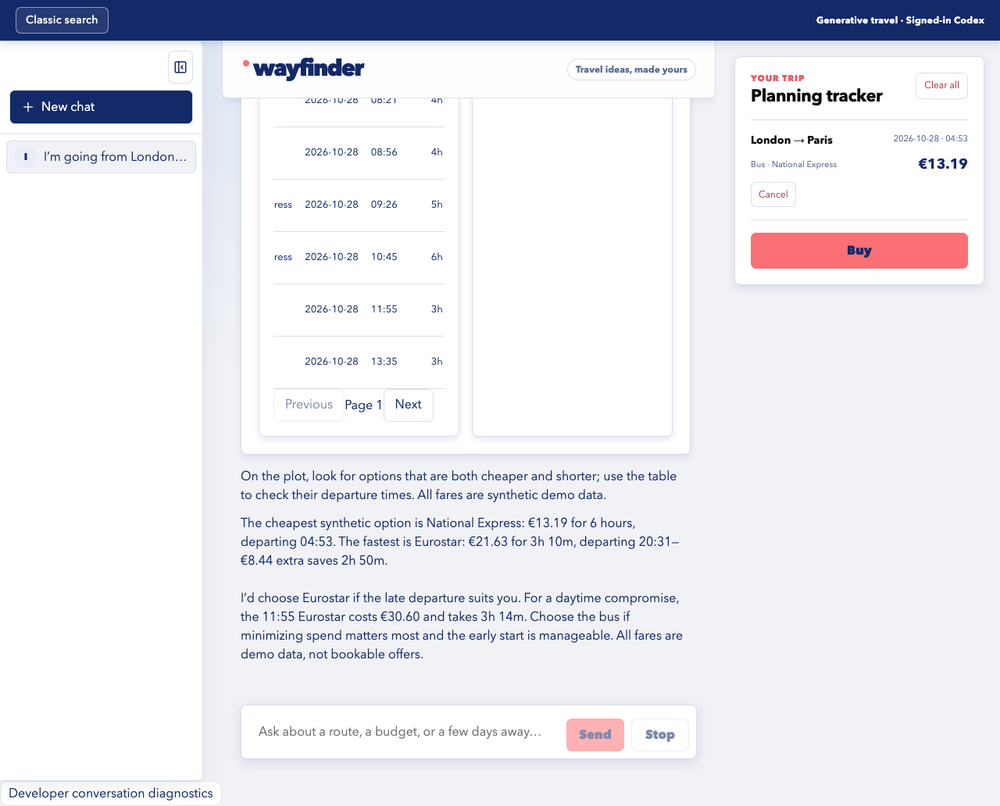
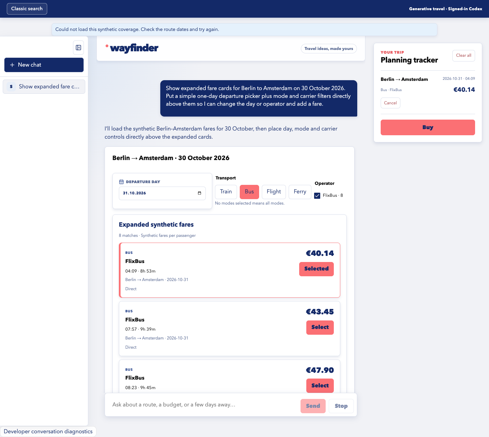
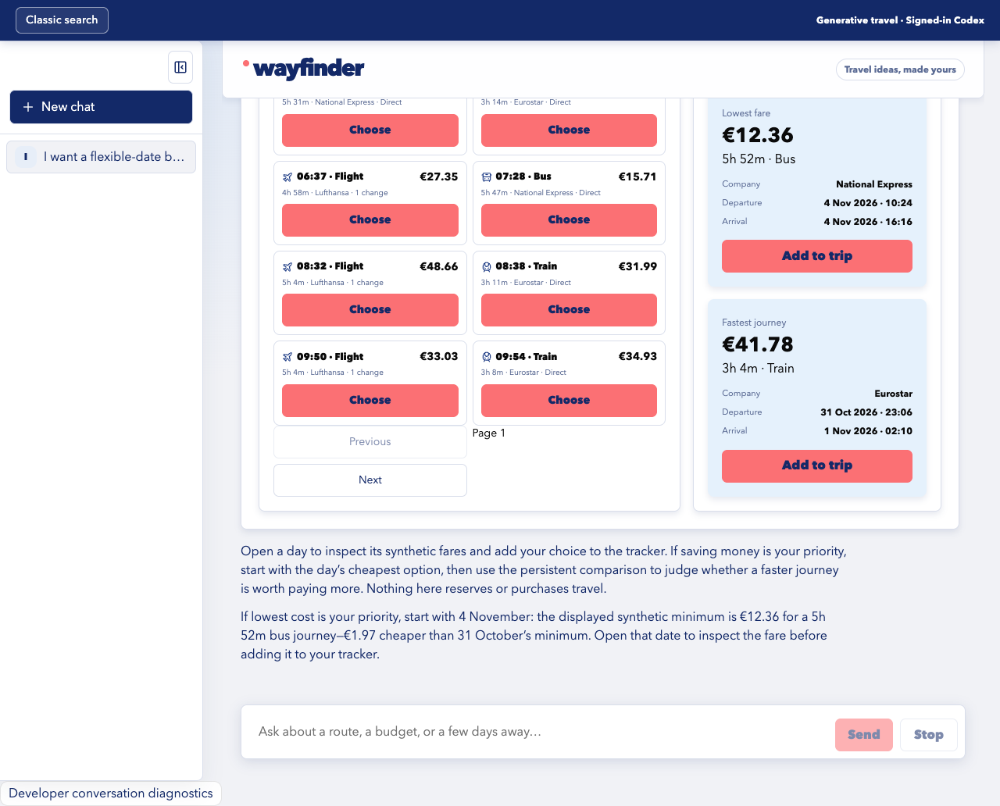
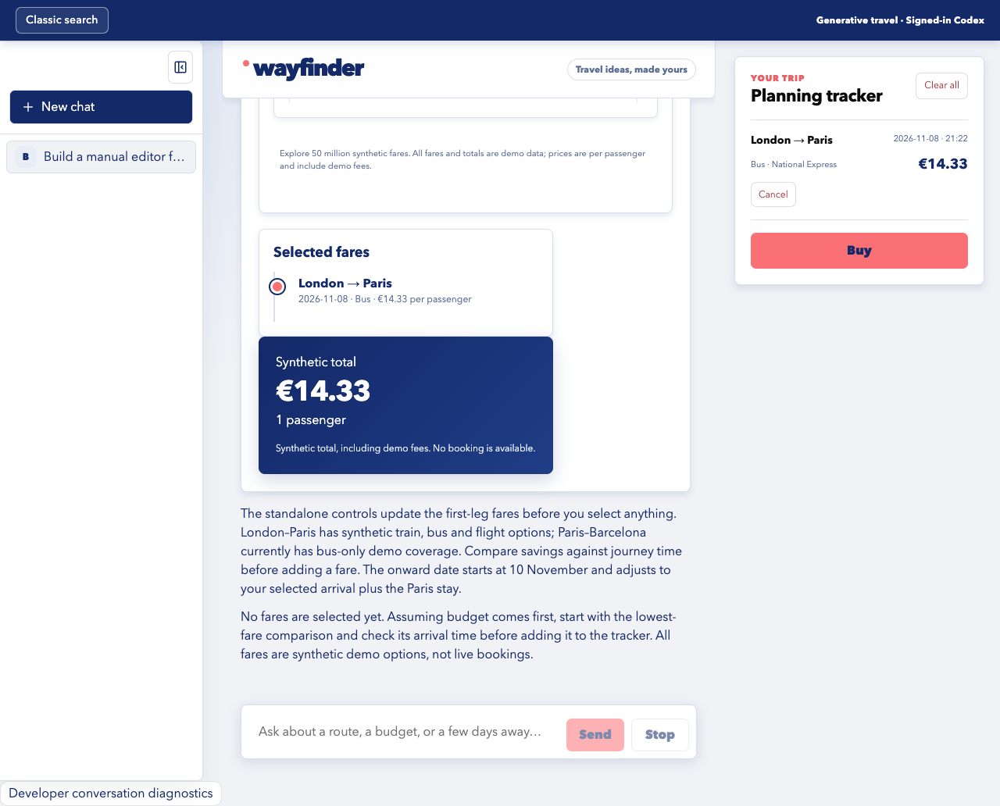

Root and layouts
Compose the page
TravelSurface is the required root for one artifact. Only registered layout nodes, including heroes, sections, stacks, grids, panes, tabs and carousels, accept composed children.
A generative UI study for Omio
An agent assembles interactive travel views from a finite, data-bound catalog, using synthetic fares and browser-owned controls.
Explore compositions
Project film
Ten prompts selected from the capability audit. Open a composition to inspect its prompt, registered components and captured interface.
Prompts like: Help me choose how to travel from London to Paris on 8 December 2026. Make a visual dashboard for every transport mode present in the synthetic data, showing the number of options, the cheapest fare and the fastest journey for each mode. Keep a short comparison table visible so I can choose one, and tell me whether paying more for the faster option looks worthwhile.
Components used

Prompts like: I’m going from London to Paris on 8 December 2026. Help me choose between saving money and saving time. Show the exact options and make the price-versus-duration tradeoff obvious.
Components used

Prompts like: Find me a direct London to Paris trip between 8 and 14 December 2026 for at most €80. Give me a compact shortlist I can add to my trip, with useful filters close by.
Components used

Prompts like: Track Berlin to Amsterdam fares from 8 to 14 December 2026. Put a simple departure-date strip above a price-by-day calendar, keep cheapest versus fastest visible, and let me add a fare from the calendar.
Components used
Prompts like: Show me Berlin-to-Amsterdam journeys for 8 December 2026 in one easy-to-read list, with the company, departure and arrival times, journey length, stops and price for each, and a way to add one to my trip. Above the list, I want to change the departure day and filter the results by company and by train, bus or flight. For the transport filter, give me small buttons I can turn on or off independently, so I can include more than one type. Keep these choices together on one line and the rest of the view in one column. Under the details, compare the cheapest and fastest journeys so I can decide whether the time saving is worth paying more.
Components used

Prompts like: I'm going from London to Paris on 8 December 2026 and want an easy way to choose. Start with a quick introduction to the trip. Let me switch between a small table of the exact options and a chart showing what each price buys me in travel time. Under that, let me swipe between a cheapest-versus-fastest comparison and the day's departure and arrival schedule. Keep those choices next to my chosen journey and its total cost, and keep my selection visible while I browse.
Components used

Prompts like: I want a flexible-date booking workspace for London to Paris from 8 through 14 December 2026. Show the local cheapest option on each date, let me inspect and add a fare for a day, and keep the cheapest-versus-fastest comparison visible.
Components used

Prompts like: I'm planning London to Paris to Barcelona starting 8 December 2026, with two nights in Paris. Before I choose a fare, I want to change the first London-to-Paris journey on its own and see each change: where I'm leaving from and going to separately, the departure day, how I travel, my Paris stay and whether the journeys are ordered by cheapest, fastest or departure time. Put the travel type, Paris stay and ordering choices next to each other, and let me scroll through the matching fares with their details and add one to my trip. Show the cheapest and fastest options for this first journey. Keep the whole trip underneath, where I can change and choose both journeys together, and show the cheapest and fastest Paris-to-Barcelona options there. Keep my chosen journeys and total cost in a compact summary beneath both areas while I browse.
Components used

Prompts like: Plan London to Paris to Barcelona starting 8 December 2026, with two nights in Paris and four in Barcelona. Give me one editable all-leg workspace, plus a route headline, the ordered city sequence, stay allocation, selected-fare count, coverage details, and a concise explanation of how each leg connects.
Components used
MultiCityPlanGrid internally rendered CityField, TravelDate, StayDuration, TransportSelect, FareOrder and FadeFares for each leg.

Prompts like: I can leave London for Paris any day from 8 through 14 December 2026. Give me a week-at-a-glance price view with previous and next week browsing, a direct date field, carrier and sorting controls, and detailed fare cards I can add to my trip. Keep the selected day separate from the visible week.
Reserved for a future composition image.
The model proposes a small tree of registered components and live references. The browser validates it, renders source-owned React, and keeps data queries and interaction state outside the model.
System architecture
The browser sends the prompt and a compact snapshot to a local model agent. A validated scene returns to the catalog renderer, while a separate Python service supplies bounded projections from the server-side synthetic fare fixture.
Pan horizontally to inspect the full system

Component connections
TravelSurface is the required root. The agent chooses registered layouts and leaves, while their React implementations, state updates, queries and selection behavior remain source-owned.
Root and layouts
TravelSurface is the required root for one artifact. Only registered layout nodes, including heroes, sections, stacks, grids, panes, tabs and carousels, accept composed children.
Controls
Date, route, mode, carrier, price, duration, direct-trip, sorting and stay controls write to the browser state store. They do not start another model turn.
Data views
FareCards, calendars, comparisons, timelines and CheapestFastest request fixed projection types. Selection-capable views send exact displayed fare references to the shared tracker.
Fixed composite
MultiCityPlanGrid is one agent-visible leaf. React fixes each leg as CityField → TravelDate → TransportSelect → FareOrder → FadeFares, with StayDuration between legs.
Trip summaries
SelectedItinerary, SyntheticTotal and SelectedFareCount read the current selected-fare state. StickySummary keeps that context visible beside longer result views.
Host shell
The chat runtime, display ledger and PlanningTracker sit outside the composed tree. They preserve what was shown, local interactions and selected fares across scene changes.
Runtime flow
Each boundary narrows what crosses it. The model makes the composition decision; the host executes everything that touches application state or fare data.
The prompt travels with current artifacts, live references, selected bounded facts and a record of what the user saw.
The model returns component names and scalar references, not React, HTML, CSS, SQL or fare rows.
The boundary checks registered names, allowlisted props, live references, ownership and strict size limits.
Source-owned React renders the scene. Direct controls update typed browser state without another model call.
The coordinator asks the Python API for fixed projections. Selected displayed fares flow into the host-owned tracker.